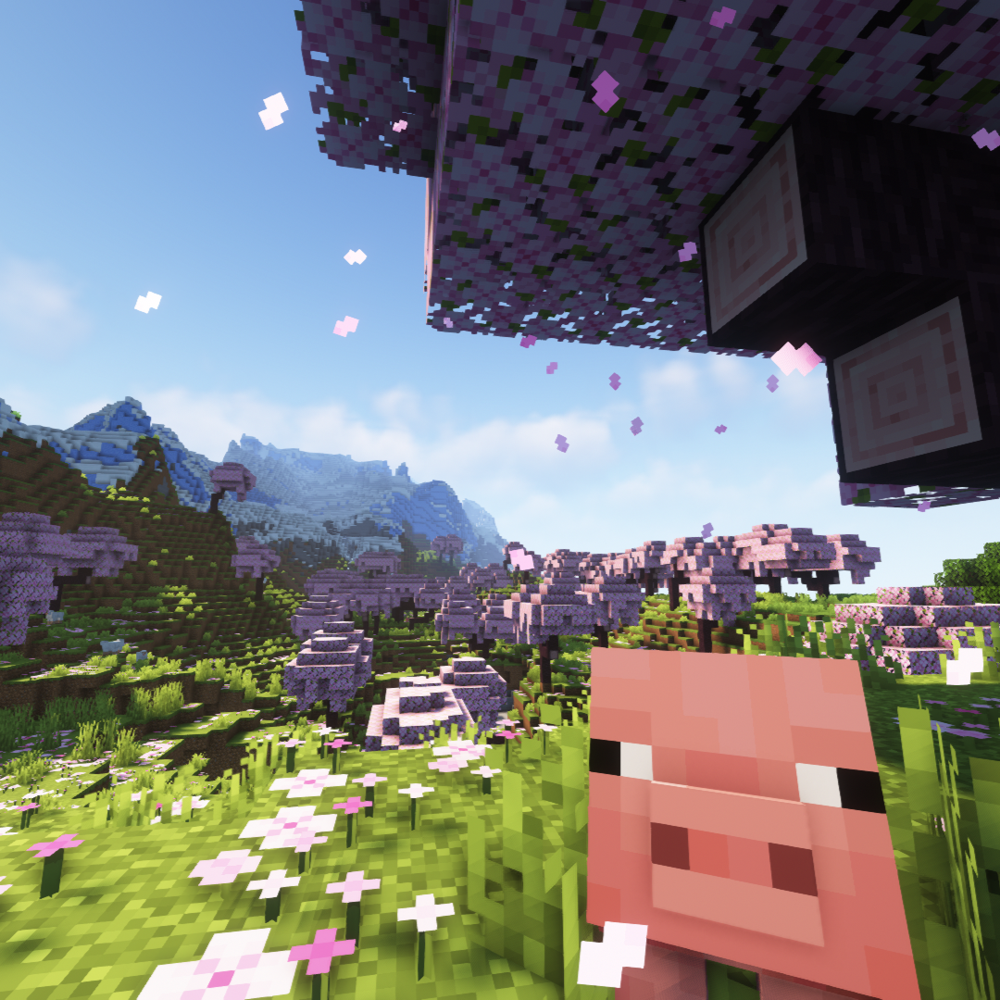

とりさんのポートフォリオ
About Me

| name | とりさん |
|---|---|
| birthday | 2006/04/30 |
| From | 大阪府 |
| Affiliation | 大阪公立大高専 総合工学システム学科 知能情報コース |
| Hobby | ゲーム、自作PC、プログラミング、動画編集 |
History
-
2022/04/08
大阪公立大学工業高等専門学校入学
学校名、カリキュラムが改変され、一期生として入学。
学友会執行部に所属し、情報通信課に配属。 -
2022/05/08
TRにてプログラミング勉強の開始
学校にて紹介されたTechRunwayに通い、HTML、CSS、JavaScriptの基礎を勉強。
支給していただいたPCがMacだったためこの頃からMacも使うように。 -
2022/10/XX
2022年度高専祭特設サイトの作成
高専の文化祭である高専祭の運営として、特設サイトをデザイン・制作を行った。
ここではReactを使い開発を行なった。 -
2023/04/1
知能情報コースに配属
カリキュラム改変により、2年次よりコースが分けが行われる。
無事進級ができ、第一志望であった知能情報コースに配属 -
2023/10/01
2023年度高専祭特設サイトの作成
昨年度同様、高専祭の運営として、特設サイトデザイン・作成を行った。
また、今回は作成だけでなくプロジェクト管理も行った。 -
2024/04/1
3年生へ進級
知能情報コース2年の単位を取得でき、無事3年生へ進級
Articles
記事タイトル
公開日：2024/07/28(sun)
てきすとてきすとてきすとてきすと
記事を読む →